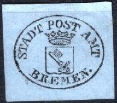
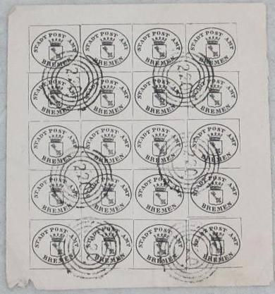

(Envelope, reduced size)
Return To Catalogue - Bremen postage stamps
Note: on my website many of the
pictures can not be seen! They are of course present in the
catalogue;
contact me if you want to purchase it.

(Envelope, reduced size)
(1 Grote) on white paper (1 Grote) on bluish paper
The point of the arms must be between the first "E" and "M" of "BREMEN". Two types exist of these envelopes differing in the "A" of "AMT", the "P" of "POST" and the "R" of "BREMEN".
Warning: these envelopes have also been forged! Reprints also exist of these envelopes. Any whole envelopes with the ellipse placed in the upper right hand side are forgeries. The next stamps are forgeries:
Forgery
The next items are forgeries, they are cancelled with a "220" numeral cancel (=Thurn and Taxis cancel for Frankfurt a/M?). The words "STADT POST AMT" are too small. Note the impossible existance of sheets of 20 and blocks of these impressions:

Francois Fournier also made forgeries of this envelope (only the cutout I presume), he offers 2 varieties as first choice forgeries in his 1914 pricelist for 2 Swiss Francs (I presume the two different paper colours). I think that the "R" of "BREMEN" is placed too far to the left; a prolounged line from the left side of the shield would not touch the "R" in these forgeries. Also, the point of the shield is situated above the first leg of the "M" of "BREMEN".
Possibly a Fournier forgery
Forgeries taken from a 'Fournier Album of Philatelic Forgeries'
(reduced sizes)
(Reduced size, 'Declarations - Abgabe')
With coloured background (rouletted) 1 g red 2 g red 6 g red 12 g red 36 g red (larger size) 1 T red (larger size) 5 T red (even larger size, other design) With lined background (1865, rouletted) 1 g red With white background (1866) 1 g red (rouletted or perforated) 3 g red (rouletted or perforated) 6 g red (rouletted or perforated) 12 g red (rouletted or perforated) 36 g red (rouletted or perforated, larger size) 1 T red (perforated, larger size) Value in 'Pfennig' or 'Mark' (1872, perforated) 1 p blue 5 p blue 10 p blue 20 p blue 50 p blue 1 M blue 5 M blue 20 M blue
1 g orange 3 g orange 6 g orange 12 g orange Other larger design 36 g orange 1 T orange Value in 'Pfennig' or 'Mark' (1872)
1 p green 5 p green 20 p green 50 p green 1 M green (larger size)
In a small design were issued: 5 p, 10 p, 15 p, 20 p, 30 p and 50 p (all in colours orange and black). In a larger design (see picture above) were issued: 1 M, 2 M, 5 M, 10 M, 20 M and 30 M.
(Reduced sizes)
The following values exist: 2 g blue, 4 g red, 6
g green, 8 g lilac, 10 g orange, 4 g black on red, 34 g green on
green, 36 g brown, 54 g violet and orange, 1.2 T red and brown
and 1.22 T black and orange on blue.
In the new Mark currency were issued in 1874 the values (colour
green, value in black)
3 p, 6 p, 9 p, 12 p, 15 p, 30 p, 1.20 M, 2 M, 2.70 M and 7.20 M.
In the above design were issued: 25 p, 40 p, 50 p, 80 p and 1.50 M (all in colour grey).
The following values exist: 10 p, 20 p, 30 p, 40 p, 50 p and 80 p (all in colour red), 1 M grey, 2 M grey, 5 M grey, 10 M grey, 20 M green, 20 M grey, 30 M lilac, 30 M grey, 50 M red and 50 M grey. I have seen the values 40 p and 50 p with overprint 'GOLD' (probably issued in 1923 to indicate the gold-currency).
I have seen the values 1 M grey, 2 M brown, 3 M brown, 10 M red, 20 M lilac and 20 M blue.
Other fiscal stamps exist for Bremen, for example "URKUNDEN" (1885, 3 p, 6 p, 9 p, 12 p, 15 p, 30 p, 1.20 M, 2.70 M and 7.20 M), "PROTESTEN".
The following local stamps of Hamburg were also used in Bremen, in the small design 2 p blue, 10 p red and 1 M green (text instead of woman in center) and 2 p olive in the larger design:
2 p brown 3 p blue 5 p green 10 p red
Postcard in the same design:
(Reduced size)
(Reduced size)
1 p red 3 p red 4 p red 5 p red 6 p red
An official seal, inscription "ZUR ERMITTLUNG DES ABSENDERS EROFFNET DURCH DIE DIRECTION DER BRIEFBEFORDERUNG ANSTALT BREMEN":
(Seal)
It seems that some stamps with inscription "PACKETFAHRT BREMEN" with a horse exist in 5 blue and 10 p brown and postage due stamps ("NACHPORTO" in 5 p black and 5 p blue.
{kind=link}
{kind=link}
{kind=link}
{kind=link}